Foreninger og lag
33 foreninger og lag med tilknytning til Oslomarka. Mange av dem gir også ut bøkene, årbøkene og kartene i samlingen.
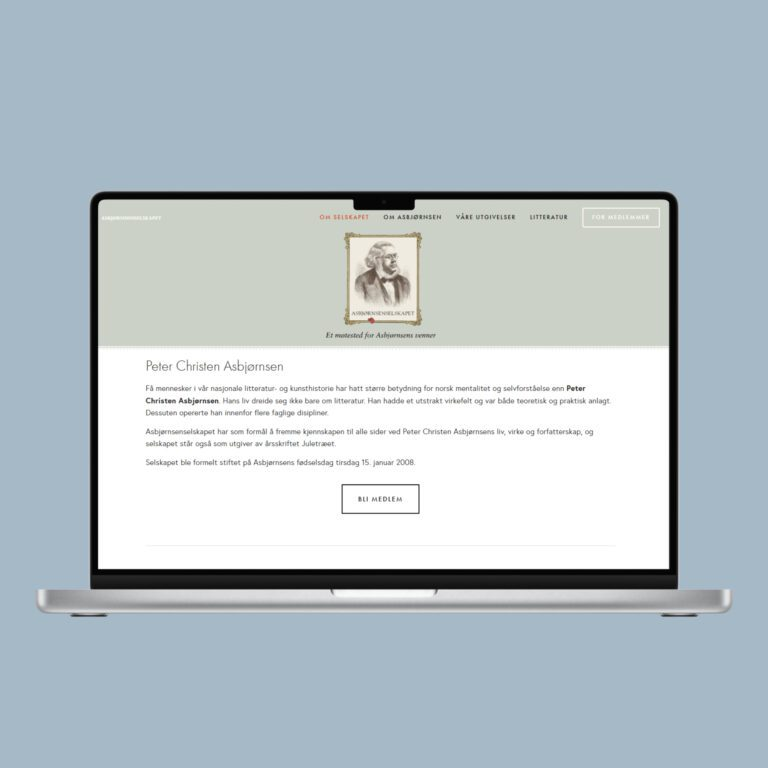
Asbjørnsenselskapet
Etablert 2008Asbjørnsenselskapet ble stiftet i 2008, og har som formål å fremme kjennskapen til alle sider ved Peter Christen Asbjørnsens liv, virke og forfatterskap, og selskapet står også som utgiver av årsskriftet Juletræet (Kilde: asbjørnsenselskapet.no).

Asker og Bærum Historielag
Etablert 1952Asker og Bærum Historielag ble stiftet i 1952. Lagets formål er å verne om lokale kulturminner og spre kunnskap om vår fortid. Historielaget utgir årboken Vest for byen. Historielaget har bidratt til, eller stått for rydding og bevaring av flere kalkovner og etablering av kulturstier i Asker og Bærum (Kilde: abhistorielag.no).

Bærum Elveforum
Etablert 2006Bærum Elveforum ble etablert i 2006, og er lokalisert i Bærum kommune. Bærum Elveforum er et kompetanse - og kontaktforum for frivillige arbeidsgrupper for Bærums vassdrag, med oppgave å bidra til vern, rehabilitering og gjenåpning av kommunens vassdrag, primært i byggesonen. Bærum Elveforum skal bidra til bevisstgjøring av ansvar og roller mellom frivillige organisasjoner og kommunens etater, og bidra til bedre dialog og samhandling mellom involverte (Kilde: b-elveforum.forening247.no).

Den Norske Turistforening
Etablert 1868Den Norske Turistforening (DNT) ble stiftet i 1868, initiert av Thomas Heftye (1822-1886). DNT er Norges største friluftsorganisasjon. Formålet er å fremme et enkelt, aktivt, trygt og miljøvennlig friluftsliv for alle. Merker stier og ruter, og forvalter over 550 hytter. Arrangerer turer og kurs (Kilde: DNT, Wikipedia).
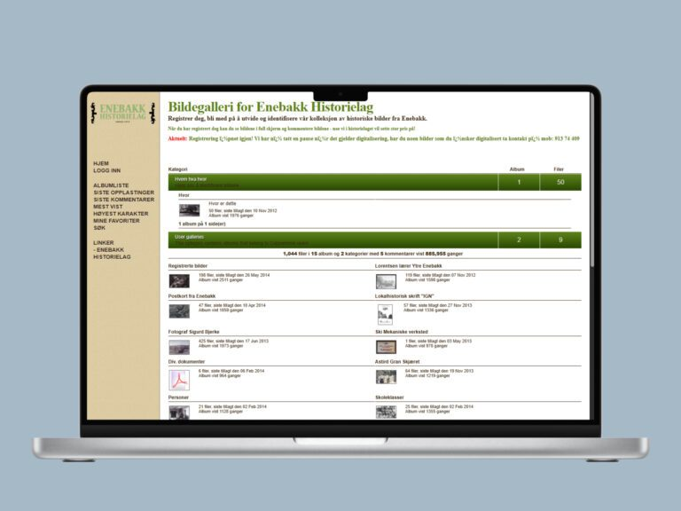
Enebakk Historielag
Etablert 1955Enebakk Historielag ble stiftet 29. mars 1955. Lagets formål er å samle og utbre kunnskap om Enebakks historie på ulike emner og felter. Enebakk Historielag drifter Enebakk bygdetun og Aksel Bråtens hjulmakerverksted, arrangerer temamøter og rusleturer. Fra 2006 har Enebakk Historielag, med opprettelsen av en egen kulturminnegruppe, satt fokus på bevaring, merking og synliggjøring av kulturminner i Enebakk. Enebakk Historielag utgir lokalhistorisk litteratur, samt tidsskriftet IG (Kilde: wikipedia.no).
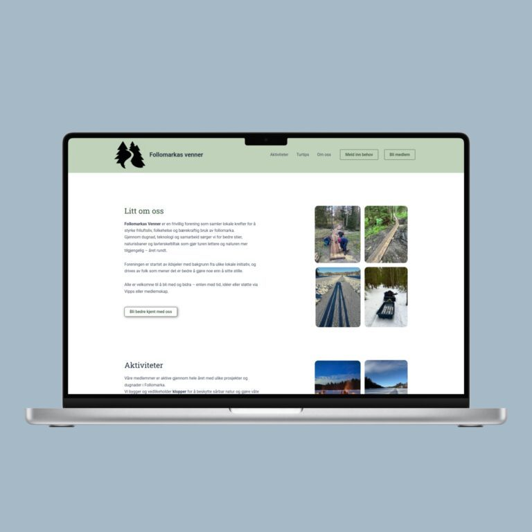
Follomarkas Venner
Etablert 2023Follomarkas Venner ble stiftet i 2023, og er en frivillig forening som samler lokale krefter for å styrke friluftsliv, folkehelse og bærekraftig bruk av Follomarka. Gjennom dugnad, teknologi og samarbeid sørger vi for bedre stier, naturisbaner og lavterskeltiltak som gjør turen lettere og naturen mer tilgjengelig – året rundt (Kilde: follomarkasvenner.no).

Groruddalen Historielag
Etablert 1981Groruddalen Historielag ble stiftet den 27. oktober 1981 med følgende formålsparagraf: Lagets formål er å samle og utbre kunnskap om Groruddalens historie. Laget skal arbeide for registrering og vern av kulturhistoriske fornminner av alle slag i Groruddalen, i samarbeid med lokalbefolkningen, andre historielag, organisasjoner, institusjoner og myndigheter. Kunnskap om den historiske utvikling i Groruddalen, kulturverdier og annet materiale vil laget gjøre tilgjengelig for lokalbefolkningen ved å arrangere turer, utstillinger o.l., gjennom artikkelstoff og på annen måte. Hjalmar Kielland og Akers Avis Groruddalen var sterkt aktiv for å få dannet historielaget (Kilde: grohi.no).

Historielaget Grefsen–Kjelsås–Nydalen
Etablert 1979Historielaget Grefsen–Kjelsås–Nydalen ble grunnlagt i 1979. Historielaget har til formål å vekke interesse og skape forståelse for vår historie. De arbeider for å utbre kjennskap til vår kulturarv og verne kulturminner av alle slag.

Hole Historielag
Etablert 1995Hole Historielag ble stiftet i 1995, og har som formål å fremme interesse for lokalhistorie i Hole kommune. De ønsker å skape en følelse av tilhørighet og trivsel ved å øke kunnskapen om nærmiljøet. Laget tar også et spesielt ansvar for å holde kulturarven levende gjennom arbeid med bygdehistorie, vedlikehold av kulturminner og utvikling av bygdetun. (Kilde: hole-historielag.no, hole.kommune.no).
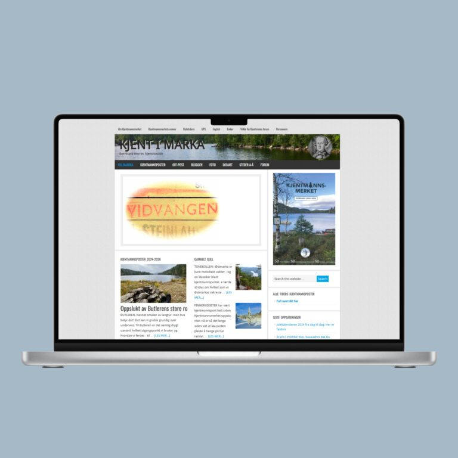
Kjentmannsmerket.org
Etablert 2000Kjentmannsmerket.org ble stiftet i 2000, og er et uavhengig nettsted som står fritt i forhold til arrangørene av Kjentmannsmerket: Skiforeningen og Kjentmannskomiteen. Nettstedet har innhold som omhandler både aktuelle kjentmannsposter (de som står i skogen akkurat nå) og om dem som har vært i bruk tidligere. I tillegg presenteres spennende steder i Oslomarka som ikke har vært kjentmannspost, men som kanskje kan bli det. En egen seksjon er tilegnet Stormarka – skogene utenfor Oslomarka. Nettstedet har omhandler også Bernhard Herre (1812-1949), sitat: «som var trolig den første byboer som ble kjentmann i marka og skrev innsiktsfullt om det han opplevde på sine turer» (Kilde: kjentmannsmerket.org).
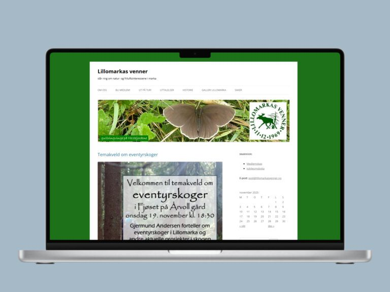
Lillomarkas Venner
Etablert 1969Lillomarkas Venner er en interesseorganisasjon for Lillomarka, den ble startet i 1969. Foreningen arbeider for bevaring av Lillomarka og de natur- og kulturverdier som finnes, samt for bevaring av Lillomarkas grenser og arbeide for å utvide marka med naturområder som grenser inntil marka, spesielt når disse står i fare for å bli utbygget (Kilde: www.oslobyleksikon.no, nettside: https://lillomarkasvenner.no).

Lunner Historielag
Etablert 1975Lunner Historielag ble stiftet i 1975, og har som formål å fremme interessen for lokalhistorie på et bredt grunnlag, verne og ta vare på bygdas historie og kulturminner, spre kunnskap om lokalhistorie og kulturvern og øke tilgjengeligheten til bygdas kulturminner (Kilde: lunnerhistorielag.com).

Lørenskog Elveforum
Etablert 2016Lørenskog Elveforum ble stiftet i 2016, og er lokalisert i Lørenskog kommune. Lørenskog Elveforum er et kompetanse- og kontaktforum for frivillige personer og organisasjoner med interesse i Lørenskog sine vassdrag. Elveforumets formål er å bidra til: Økt interesse for og opplevelse av vassdragene og tilhørende kulturminner, økt bruksverdi og tilgjengelighet av kommunens vassdrag med mål om å bidra til trivsel og aktivitet i nærmiljøet, økt involvering av barn og unge, vern og rehabilitering av vassdrag med tanke på naturverdier og biologisk mangfold, gjenåpning av kommunens vassdrag, primært i byggesonen, gjennomføring av tiltak som reduserer fare for oversvømmelser, bevisstgjøring av ansvar og roller hos de frivillige organisasjoner og kommunens etater og bedre informasjon, dialog og samhandling mellom involverte (Kilde: lorenskogelveforum.com)

Lørenskog Historielag
Etablert 1954Lørenskog Historielag ble stiftet i 1954, og har som formål å øke og utbre kunnskaper om Lørenskogs historie og vekke interesse for kulturliv og virke i bygda gjennom tidene. Laget er tilsluttet Romerike Historielag som er en fellesorganisasjon for 17 lokale historielag. Lagets tilholdssted er på Lørenskog bygdemuseum, hvor de har kontor og et omfattende arkiv. Møtevirksomheten er også lagt hit. Historielaget har en rekke bøker om Lørenskog til salgs til en rimelig pris (Kilde: lorenskog.historielag.no).

Maridalens Venner
Etablert 1970Maridalens Venner ble stiftet i 1970 for å hindre at dalens gårder skulle bli revet. På 1980- og 90-tallet var det arbeidet for vern av Maridalen og kampen mot golfbaneanlegg som fikk mest oppmerksomhet. Maridalens Venner var med på å forhindre en kommunal rivningsplan og bidro til at det isteden ble utarbeidet en statlig verneplan. I dag jobber foreningen for vernet av dalen, det å ta vare på et historisk jord- og skogbrukslandskap, og en viktig industrihistorie. Maridalens Venner har utviklet seg fra å bekjempe en rivningsplan på 70-tallet, via å få utarbeidet en verneplan på 90-tallet, til i dag å jobbe for å realisere formålet med verneplanen gjennom å utarbeide konkrete handlingsplaner (Kilde: maridalensvenner.no, wikipedia.no).
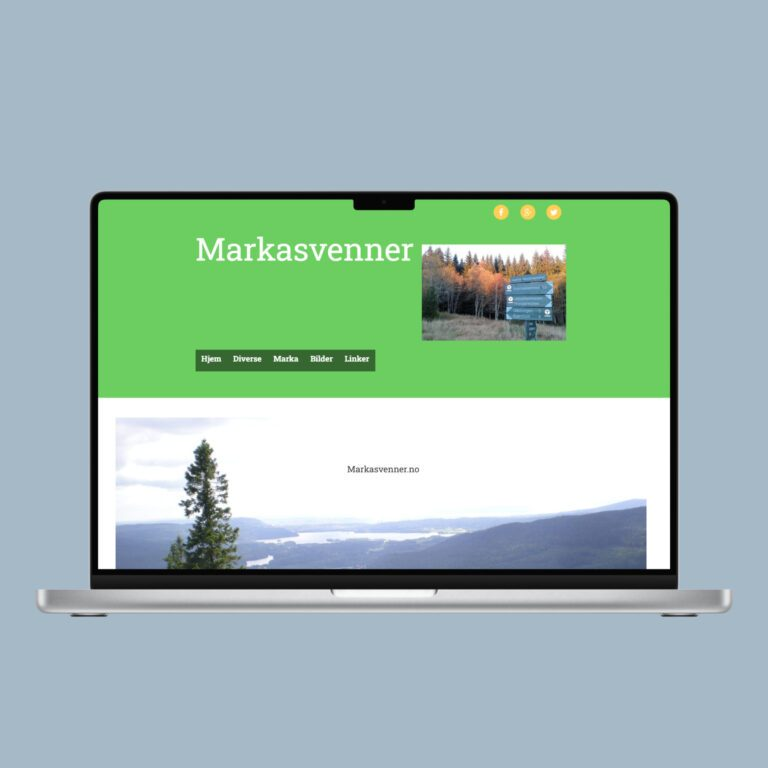
Markas Venner
Etablert 1997Markas Venner driftes av Frysja og omegn Forening. Nettsiden presenterer informasjon om marka med et ønske om å øke interessen for marka som tur og rekreasjons kilde. Nettsiden har også som mål å formidle turstier og opplevelser i fra marka. Internett er et medium til å formidle dette med bilder og historier i fra marka. Det vil også bli lagt ut lenker til andre relevante sider både offentlige og private. Stadig flere mennesker bosetter seg i byer og tettsteder, og grøntområdene blir mindre. Det skaper et press på bruken av friluftslivsområdene i sentrale strøk, spesielt i de store byene. De regulerte friområdene i bymarkene rundt storbyene er under press for å få bygget flere boliger (Kilde: norid.no, markasvenner.no).
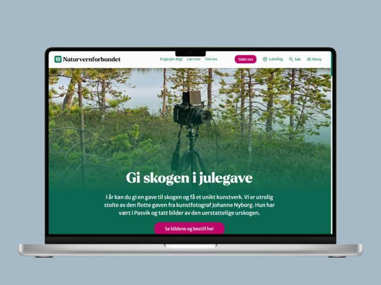
Naturvernforbundet
Etablert 1914Naturvernforbundet ble grunnlagt i 1914 og er Norges eldste natur- og miljøvernorganisasjon. Vi er en demokratisk medlemsorganisasjon med 43 000 medlemmer og rundt 100 fylkeslag og lokallag i hele landet. Naturvernforbundet jobber med et bredt spekter av saker innen miljø- og naturvern, men spesielt med områdene naturvern, klima, energi og samferdsel. (Kilde: naturvernforbundet.no).

Nittedal Historielag
Etablert 1953Nittedal Historielag ble stiftet i 1953, og tilbyr bl.a. turer, møter, kurs og publikasjoner, alt tilpasset for å bli kjent med Nittedals historie. Samarbeider med Romerike Historielag (Kilde: nittedal-historielag.no).

Oslo Elveforum
Etablert 2000Oslo Elveforum ble stiftet i 2000, og er et kompetanse- og kontaktforum for frivillige arbeidsgrupper for Oslos elver og bekker. Formålet er å bidra til vern, rehabilitering og gjenåpning av byens vassdrag i byggesonen. Oslo Elveforum arbeider for at byens vassdrag skal være friske og rene, åpne og tilgjengelige for befolkningen. Visjon er: Levende vassdrag fra Marka til Fjorden (Kilde: osloelveforum.org).

Oslo og Omegn Friluftsråd
Etablert 1936Oslo og Omegn Friluftsråd (OFF) ble stiftet i 1936 (opprinnelig: Oslomarkas Friluftsråd), og er en paraplyorganisasjon med 42 medlemsorganisasjoner og 14 medlemskommuner/fylkeskommuner. OOF har seks ansatte medarbeidere og kontorlokaler i Oslo sentrum. Opplæringsaktivitetene har base på Frognerseteren friluftssenter, men mange aktiviteter og arrangementer holdes ute i medlemskommunene (Kilde: osloogomlandfriluftsrad.no).
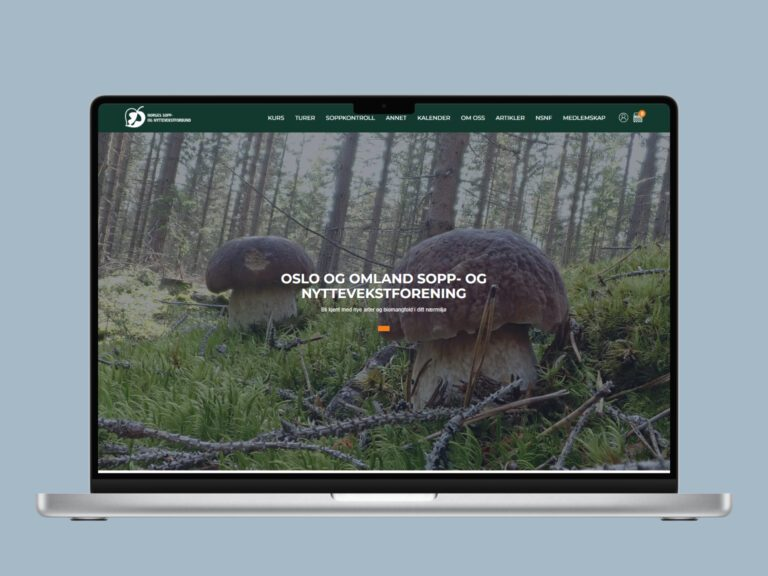
Oslo og omland sopp- og nyttevekstforening
Etablert 2005Oslo og omland sopp- og nyttevekstforening, er en lokalforening tilsluttet Norges sopp- og nyttevekstforbund (stiftet 2005). Foreningen arbeider for å øke kunnskapen om, og bruken av sopp og nyttevekster. Vi er engasjert i arbeidet med å bevare biomangfoldet gjennom SABIMA og er aktive i det nasjonale kartleggingsarbeidet av sopp og ville vekster gjennom Artsdatabanken. OOSN arrangerer turer, kurs, soppkontroller, foredrag og møter for sine medlemmer, men har også flere åpne arrangementer for alle interesserte. Vi dekker Oslo, Bærum og Asker og har godt over 1800 medlemmer. Det gjør oss til den største foreningen i landet. Du trenger ingen forkunnskaper for å bli medlem hos oss. Med mange ulike arrangementer har vi et tilbud for alle, fra glade sankere og ferske hobbykokker til erfarne soppsakkyndige og kartleggere. Våre aktiviteter er nokså jevnt fordelt gjennom året, men det skjer mest på våren og forsommeren når de ville vekstene kommer, og i soppsesongen om høsten (Kilde: https://oosn.soppognyttevekster.no).

Oslomarkas Fiskeadministrasjon
Etablert 1936Oslomarkas Fiskeadministrasjon (OFA) ble stiftet i 1936, og driver fiskekultivering i Oslomarka. Administrasjonen ble til etter et initiativ fra Arbeidernes Jeger og Fiskeforening og Oslo Sportsfiskere for å gjøre fisket i Oslomarka mer tilgjengelig for allmennheten og for å samkjøre administrasjonen til lokale jeger- og fiskeforeninger med oppdrett og fiskeutsettinger (Kilde: Wikipedia.no, OFA.no).
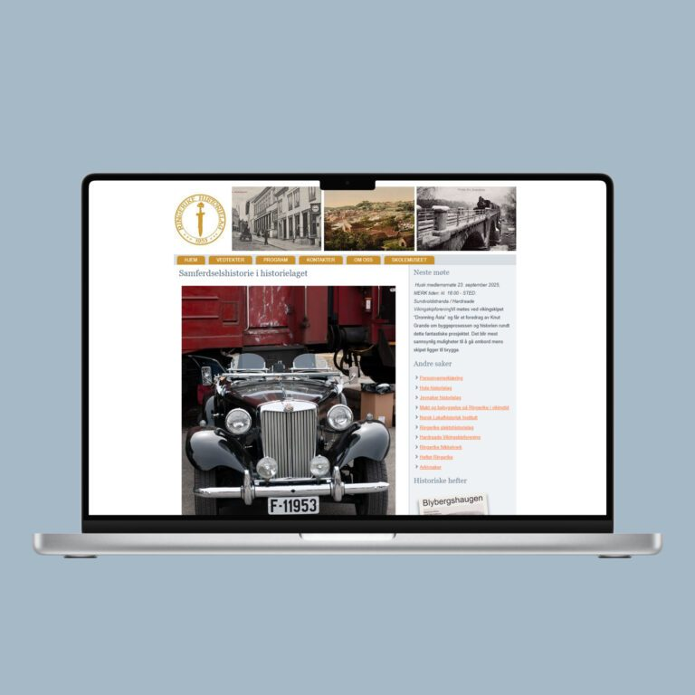
Ringerike Historielag
Etablert 1953Ringerike Historielag ble stiftet i 1953. Laget arbeider for å øke interessen for lokalhistorie, kulturvern og for å ta vare på alt som kan fortelle om folks levevilkår gjennom tidene. Laget samler inn - og publisere - om målføre, muntlig tradisjon, stedsnavn, slektshistorie, musikk, fotografier, gjenstander og annet av historisk interesse. Utgir tidsskriftet Ringerike (i samarbeid med Ringerikes Museum og Ringerike Ungdomslag) (Kilde: ringerikehistorielag.org).
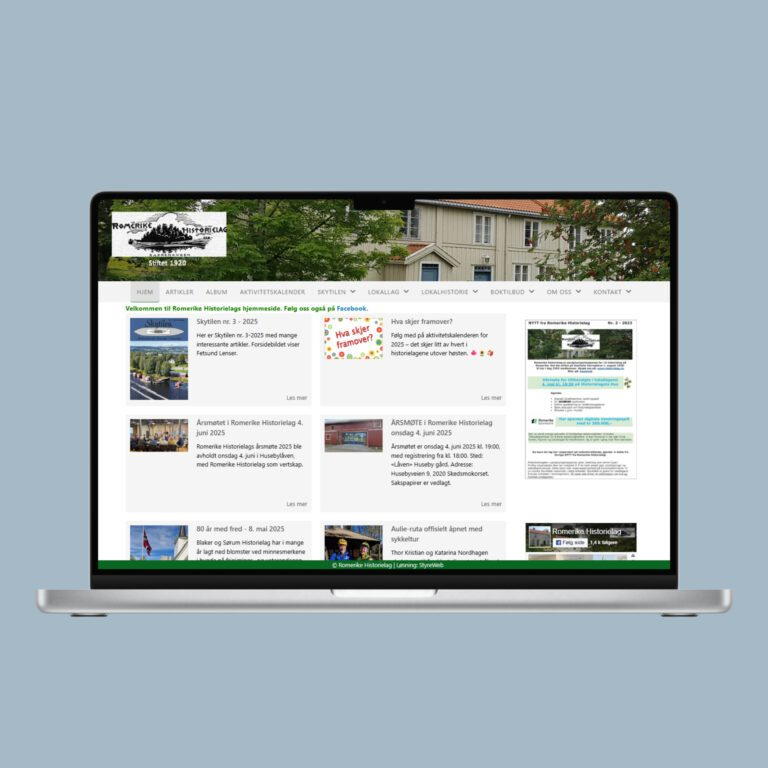
Romerike Historielag
Etablert 1920Romerike Historielag ble stiftet i 1920, og har som formål å fremme interessen for og arbeide for vern av immaterielle og materielle kulturminner samt kulturlandskap og kulturmiljøer på Romerike, å samle inn og formidle lokalhistorien på engasjerende måter, digitalt og i papirform, til alle aldersgrupper, inkludert barn og ungdom og støtte de lokale historielag og samarbeidet mellom dem. Medlemsbladet heter Skytilen (Kilde: historielag.no)
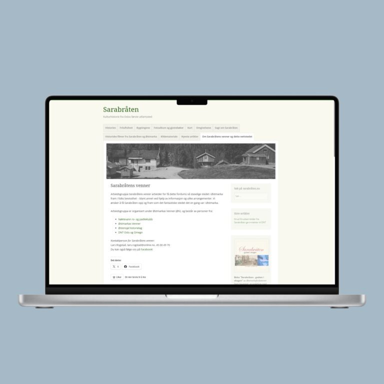
Sarabråtens Venner
Etablert 2010Arbeidsgruppa Sarabråtens venner arbeider for få dette fordums så staselige stedet i Østmarka fram i folks bevissthet – blant annet ved hjelp av informasjon og ulike arrangementer. Vi ønsker å få Sarabråten opp og fram som det fantastiske stedet det en gang var i Østmarka. Arbeidsgruppa er organisert under Østmarkas Venner (ØV), og består av personer fra: Nøklevann ro- og padleklubb, Østmarkas Venner, Østensjø historielag og DNT Oslo og Omegn (Kilde: https://sarabraaten.wordpress.com/sarabratens-venner/)

Skiforeningen
Etablert 1883Skiforeningen (Foreningen til Ski-Idrettens Fremme) ble stiftet i 1883, og er en av Norges eldste friluftsorganisasjoner. Det var Christiania Skiklub (stiftet i 1877) som tok initiativet til dannelsen av Skiforeningen. Skiforeningen arbeider for å fremme skiidrett og friluftsliv, særlig i Oslomarka. Skiforeningen merker og preparerer mer enn 2 200 km skiløyper, og vedlikeholder 3 800 skiltskilt og 800 sykkelskilt. I tillegg driftes en rekke markastuer som: Kikutstua, Løvlia, Vangen og Skullerudstua (Kilde: Skiforeningen.no).

Søndre Aker Historielag
Etablert 1980Søndre Aker Historielag ble stiftet i 1980, og arrangerer jevnlige medlemsmøter med foredrag og innbyr til turer med omvisning. Gir ut og selger bøker og digitaliserer og publiserer gamle bilder fra området. Medlemsbladet er Sør i Aker (Kilde: sondreaker.no, lokalhistoriewiki.no)
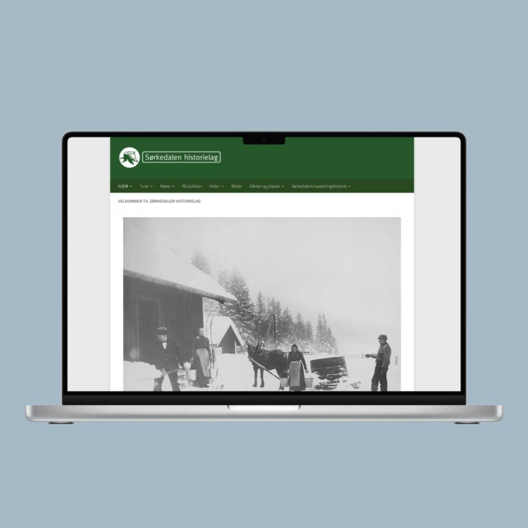
Sørkedalen Historielag
Etablert 1996Sørkedalen Historielag ble stiftet i 1996, formålet er å skape forståelse og fremme interessen for Sørkedalens historie – samt å arbeide for å bevare dalens kulturminner og kulturlandskap. Viktige oppgaver for laget er å samle inn og registrere gjenstander, skriftlig materiale (bl.a. til gårds og slektshistorie), muntlig tradisjon, opplysninger om stedsnavn, illustrasjoner og annet av historisk interesse, utgi medlemsbladet På stubben, verne om og merke natur- og kulturminner, ta vare på og formidle innsamlet historisk materiale og lokalhistorisk litteratur, arrangere møter, ekskursjoner, kurs mv. (Kilde: sorkedalen.no/historielaget/)

Sørkedalens Idrettsforening
Etablert 1886Sørkedalens Idrettsforening ble stiftet i 1886 som Sørkedalens Skiklub. Idrettsforeningen ble startet av Carl Grøttum. Grøttum var også klubbens første formann. Skiidrett var klubbens kjerne i mange år. Foreningen er kjent for de historiske skiløperne som var medlemmer på 1900-tallet. I tillegg til skikongen Lauritz Bergendahl er kjente navn Johan Kristoffersen, Ingvar Langlien, Johan Grøttumsbråten (gikk til BUL i 1920), og Lars Bergendahl. Peder Grøttumsbråten vant klubbens første kongepokal i 1889. Navneskiftet til Sørkedalens Idrætsforening kom i 1905, da sykkelsport ble en voksende aktivitet, og ble tatt opp som idrett i klubben (Kilde: wikipedia.no).

Ullern, Røa og Bygdøy Historielag
Etablert 1994Lokalhistorisk forening for gamle Ullern sogn i Aker. Ullern, Røa og Bygdøy Historielag ble stiftet 14. mars 1994 som «Ullern Historielag», også skrevet med undertittelen «Historisk forening for Bygdøy, Ullern, Røa og Sørkedalen». Historielaget var egentlig en fortsettelse av Ullern Gårds Venneforening. Denne forening var dannet i 1980 for å rehabilitere Ullern gård til beste for lokalbefolkningen.
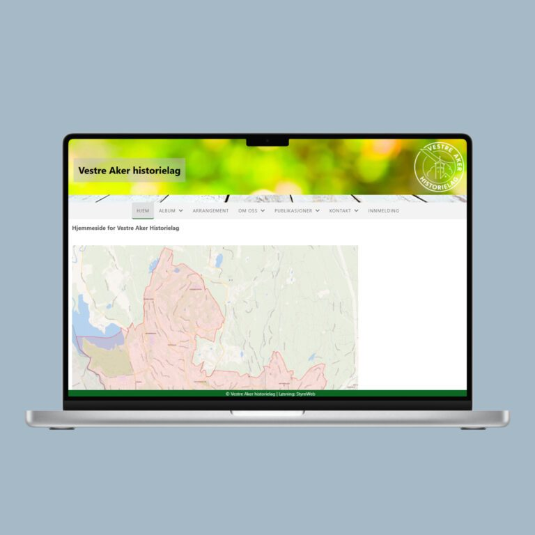
Vestre Aker Historielag
Etablert 1992Vestre Aker Historielag, tidligere Vinderen Historielag, ble stiftet i 1992. Ved siden av medlemsbladet og foredrag på jule- og årsmøter arrangerer historielaget ekskursjoner og omvisninger hvert år. Medlemsbladet Vestre Aker Historielags blad (tidligere Vinderen Historielags blad) (Kilde:v-aker-historielag.no)
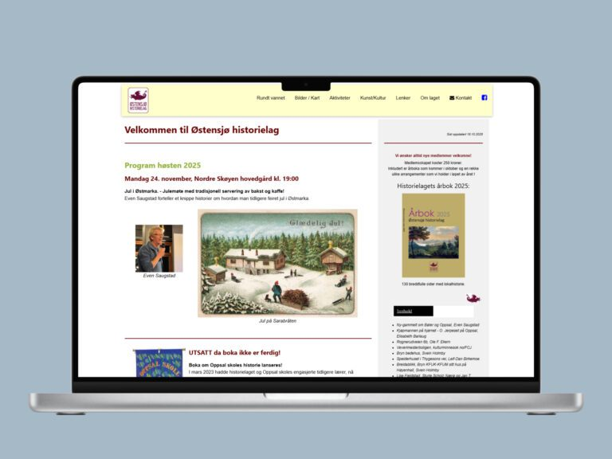
Østensjø Historielag
Etablert 1983Østensjø Historielag ble etablert i 1983, og har som formål å fremme interessen for lokalhistorie og kulturvern i vårt område, samle inn alt som har betydning for områdets historie og som kan fortelle om folks livsvilkår gjennom tidene. Ved å arrangere foredrag, vandringer, utstillinger og liknende skal laget stimulere og øke folks interesse for lokalhistorien her. Videre skal laget gjøre media og politikere oppmerksomme på områdets historie og bakgrunn. Derved understrekes viktigheten av å bevare kulturminnene for ettertiden. I enkeltsaker og der det ellers er naturlig kan laget samarbeide med andre lag og interesseforeninger (Kilde: https://www.ostensjo-hist.no/#).
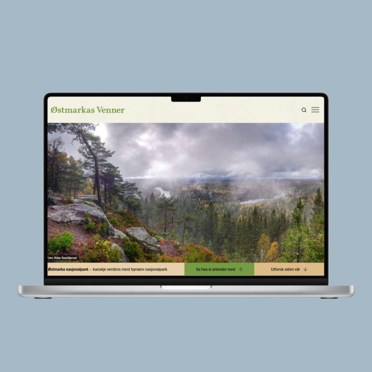
Østmarkas Venner
Etablert 1966Østmarkas Venner ble stiftet i 1966, og har som formål å bevare Østmarka som natur- og friluftslivsområde, og sikre kulturminner for dagens og kommende generasjoner. Foreningen er partipolitisk uavhengig og åpen for alle natur- og friluftslivsinteresserte personer og organisasjoner, herunder foreninger, borettslag og bedrifter, som slutter seg til foreningens formålsparagraf (Kilde: ostmarkasvenner.no).